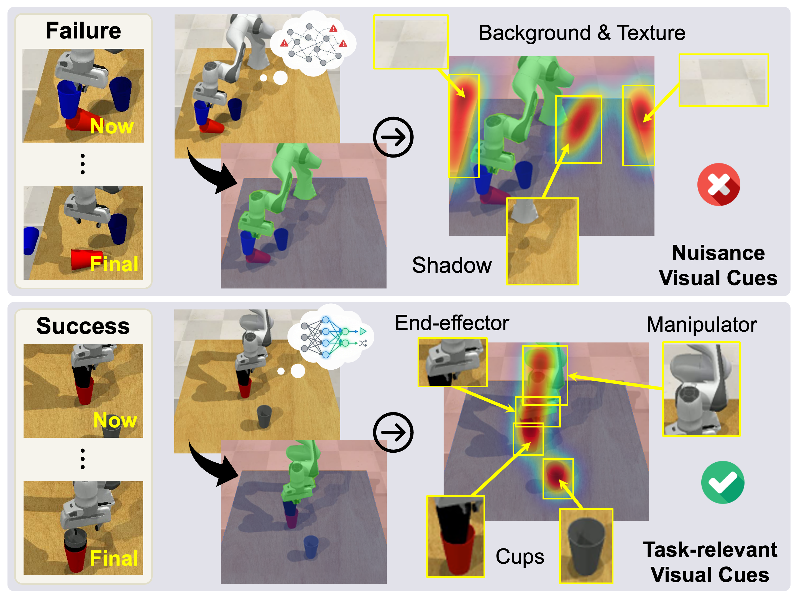

Embodied Interpretability: Linking Causal Understanding to Generalization in Vision-Language-Action Models
ICML, 2026
hz273 [at] leicester [dot] ac [dot] uk
I am a second-year CS PhD student at the University of Leicester, advised by Dr Daniel Zhou Hao and Professor Hongbiao Dong FREng, affiliated with DANiLab in the School of Computing and Mathematical Sciences.
Previously, I completed both my bachelor's and master's studies at the University of Science and Technology Beijing (USTB), receiving a master's degree in Computer Technology. During my undergraduate studies, I was also a professional Chinese University Basketball Association (CUBA) player on the USTB basketball team.

I am interested in vision-language-action (VLA) models, world action models (WAM), and human-robot interaction, particularly toward advancing embodied intelligence.

ICML, 2026